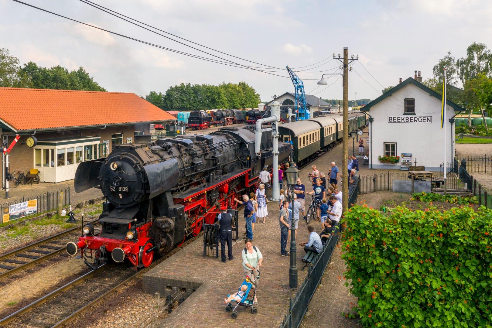

De Veluwsche Stoomtrein Maatschappij
 De Veluwsche Stoomtrein Maatschappij (VSM) is een stoomtreinmaatschappij die een toeristische treindienst exploiteert op de spoorlijn Dieren - Apeldoorn op de Veluwe in de Nederlandse provincie Gelderland. De stoomtreinritten zijn populair bij toeristen en daarom rijdt de VSM van begin april tot eind oktober iedere zondag. In de zomer zelfs zeven weken lang zes dagen per week en rijdt de stoomtrein drie dagen per week door naar Dieren.